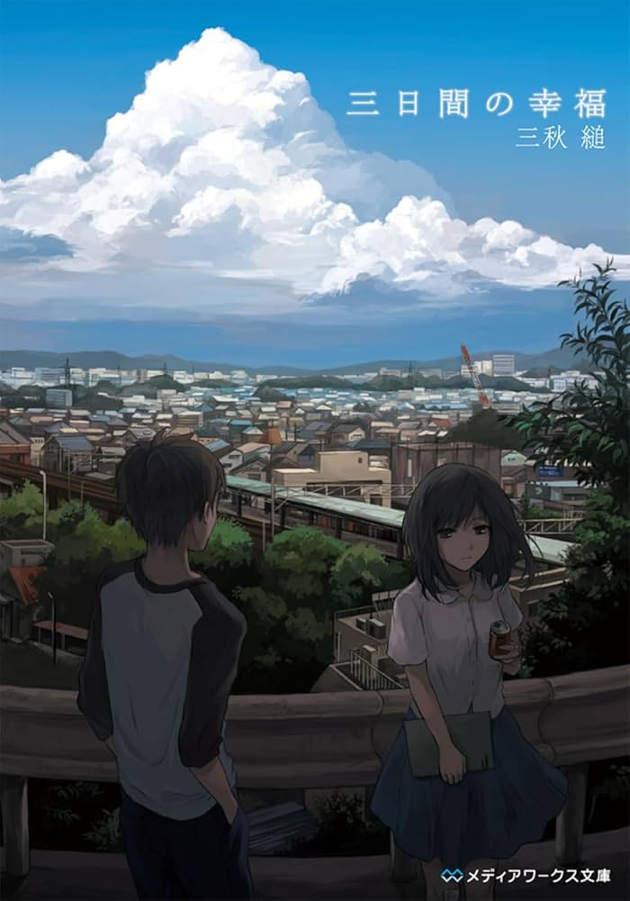
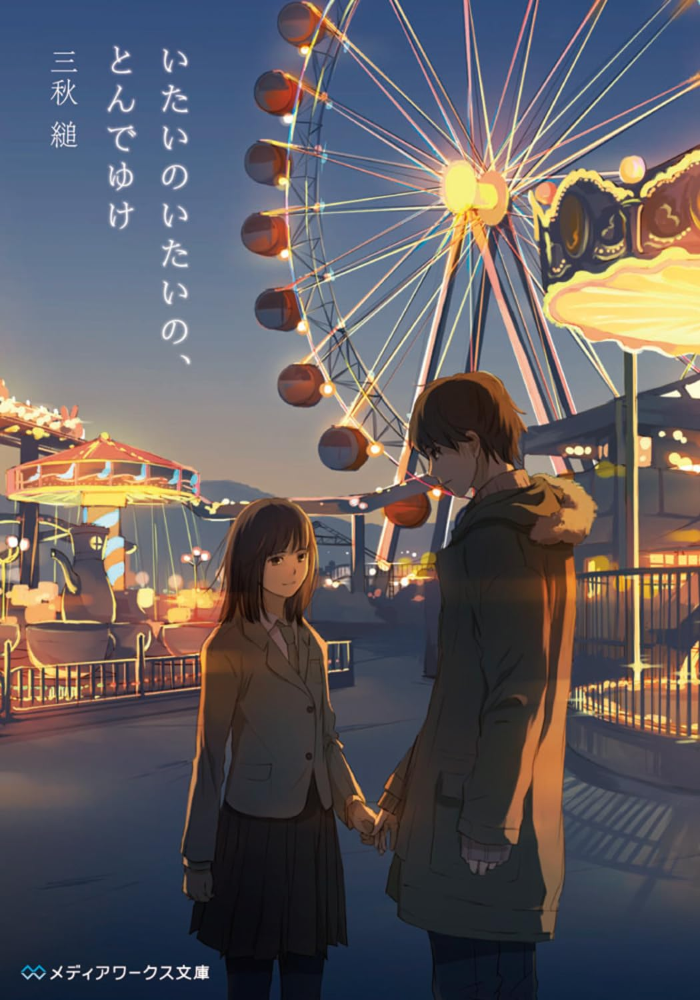
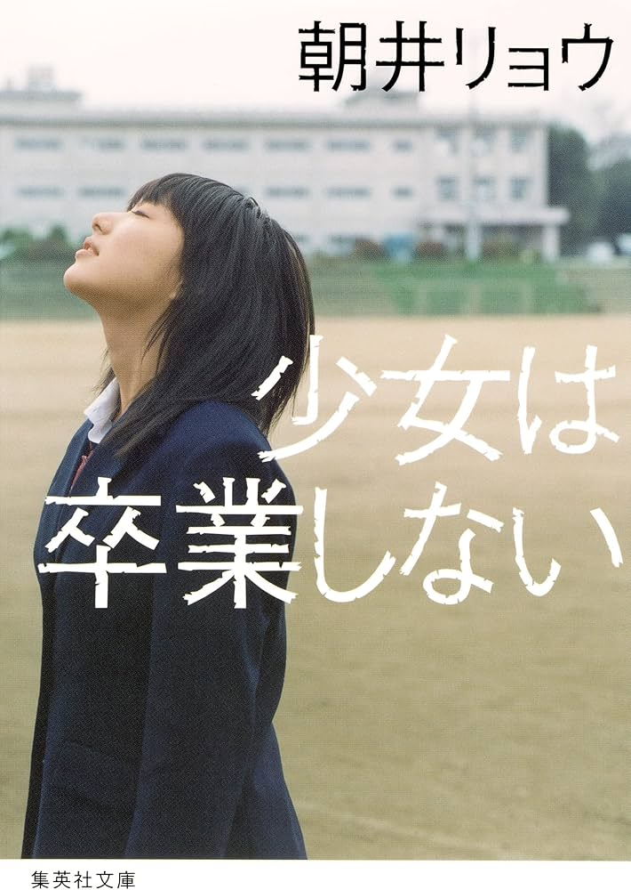
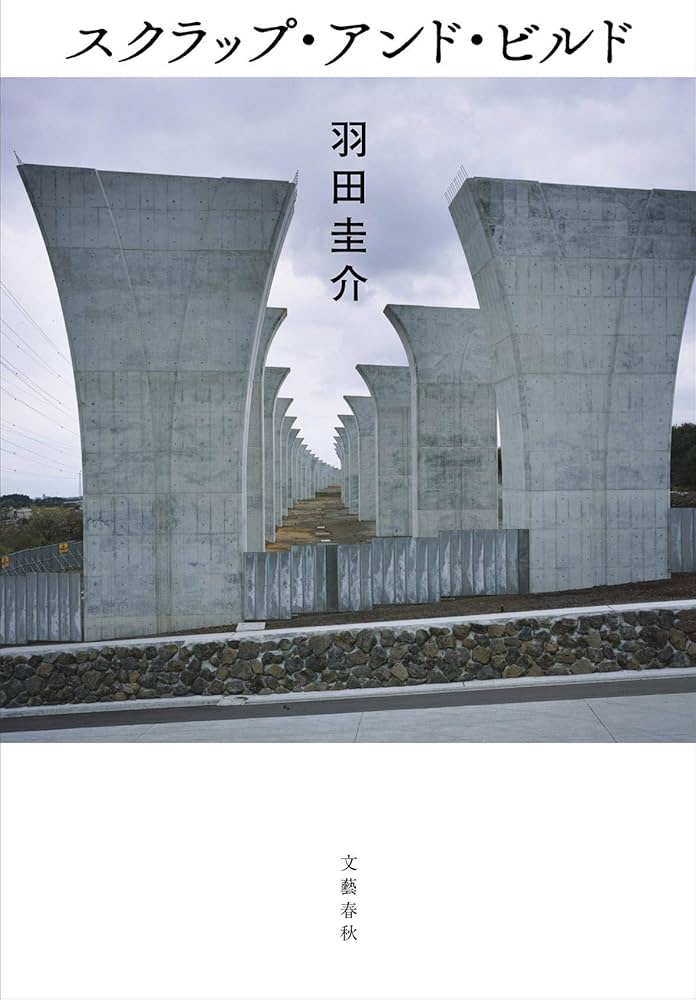

心に残り続ける小説たち
現実の痛みが突き刺さる、切なさとメリーバッドエンドの世界

イチオシ
メリーバッドエンド
三日間の幸福
著者：三秋 縋
自分の寿命を1年につき1万円で売り払った青年と、その監視員として現れた少女の物語。残されたわずか3ヶ月の寿命の中で、二人が見つけたものとは。客観的には悲劇でも、当事者にとってはこれ以上ない救いとなる、美しすぎるメリーバッドエンドの傑作です。

ダーク・切ない
純愛
いたいのいたいの、とんでゆけ
著者：三秋 縋
『三日間の幸福』の著者が贈る、もう一つの切ない物語。過去に人を殺してしまった青年と、他人の傷を自分の体に引き受ける不思議な少女が出会います。お互いの孤独を埋め合うように寄り添う二人が、最後に選んだ選択に胸が締め付けられます。

現代ドラマ
ダーク・メリバ
スクラップ・アンド・ビルド
著者：羽田 圭介
無職の青年・健斗と、口癖のように「早く死にたい」と言う高齢の祖父の奇妙な関係を描いた芥川賞受賞作。祖父の願いを叶えるため、あえて過剰に介護して身体を弱らせようとする健斗の歪んだ優しさと、その先にあるどこか切ない結末が、独特のメリーバッドエンド感を引き立てます。

切ないビターエンド
青春・恋愛
少女は卒業しない
著者：朝井 リョウ
明日、校舎が取り壊される高校の、最後の卒業式。7人の少女たちの別れと旅立ちを描いた連作短編集です。ずっと好きだった人への届かない想いや、離れ離れになる恋人とのすれ違いなど、青春のきらめきと同時に訪れる「現実的な切なさ」が胸に刺さる名作です。